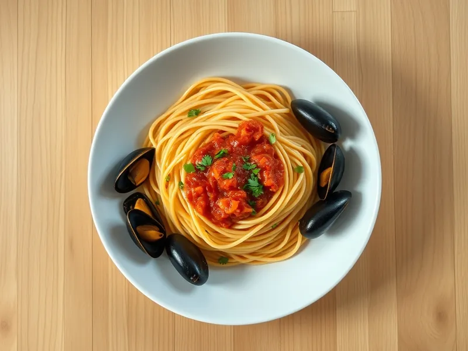

Фото: Иллюстрация ИИ, Cloudflare Workers AI
Паста с мидиями в томатном соусе
Спагетти с очищенными мидиями в томатном соусе с чесноком и петрушкой
25 мин2 порц.637 ккал на порциюБ 30 · Ж 20 · У 84Итальянская кухня
Продукты на 2 порц.
- Макароны200 г
- Мидии300 г
- Томаты в собственном соку1 банка
- Чеснок2 зуб.
- Оливковое масло2 ст. л.
- Острый перец молотый по желанию1 щеп.
- Петрушка0,5 пучка
- Соль2 ч. л.
- Вода2000 мл
Как готовить
- Разморозьте очищенные мидии в холодной воде 5 минут и откиньте. Поставьте воду для пасты на сильный огонь.
- Посолите кипящую воду и сварите спагетти по инструкции на упаковке, обычно 8-9 минут.
- Разогрейте масло на сковороде на среднем огне, обжарьте нарезанный чеснок с чили 1 минуту до светло-золотистого цвета.
- Добавьте томаты, разомните и тушите 7-8 минут до загустения. Положите мидии и прогрейте 2-3 минуты, не дольше.
- Откиньте спагетти, смешайте с соусом, посыпьте рубленой петрушкой и подавайте сразу.
Совет. Варёно-мороженые мидии уже готовы, их нужно только прогреть: от долгого тушения они сжимаются и становятся жёсткими.